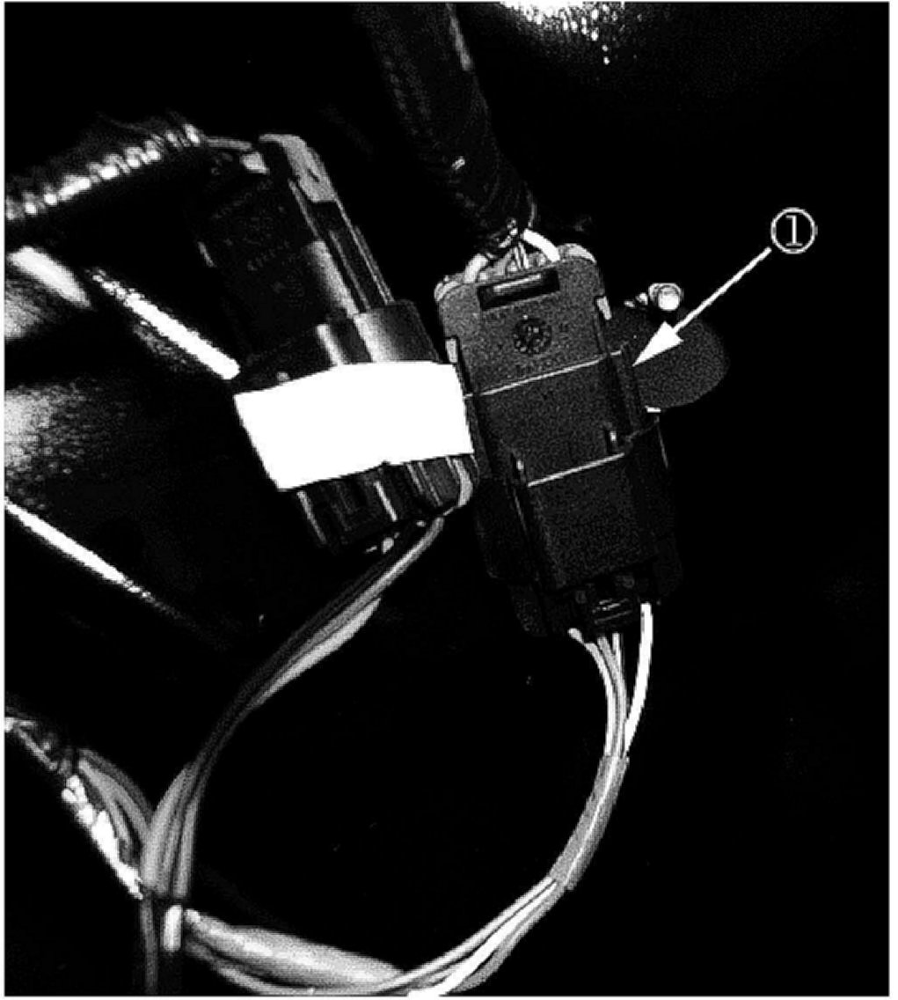
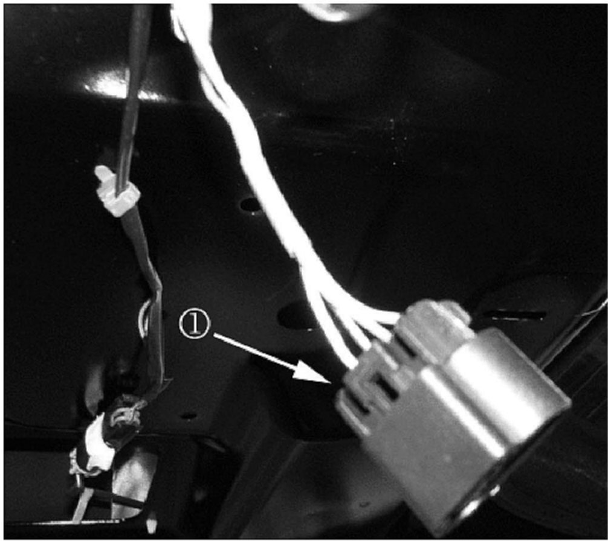
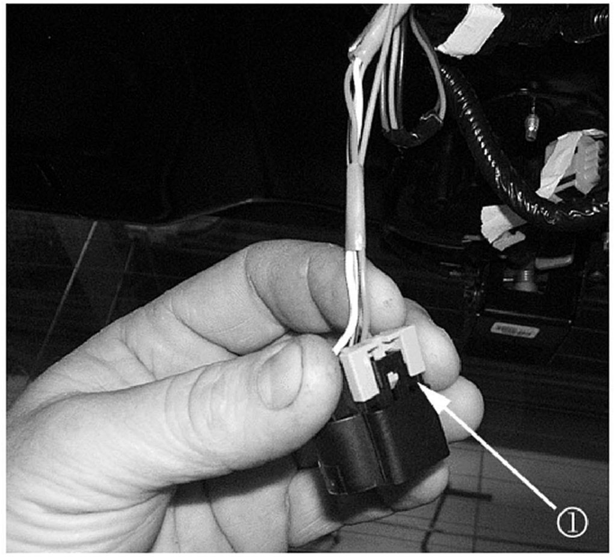
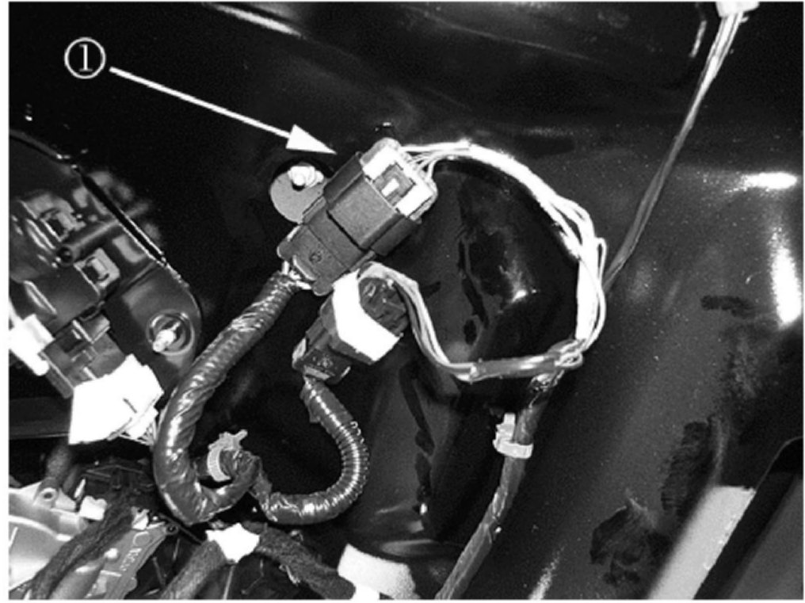
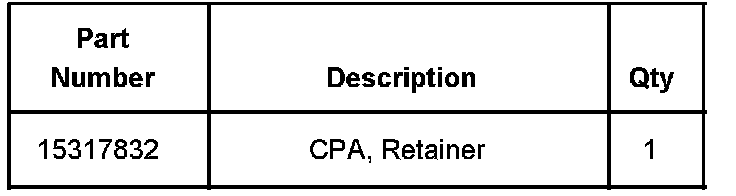
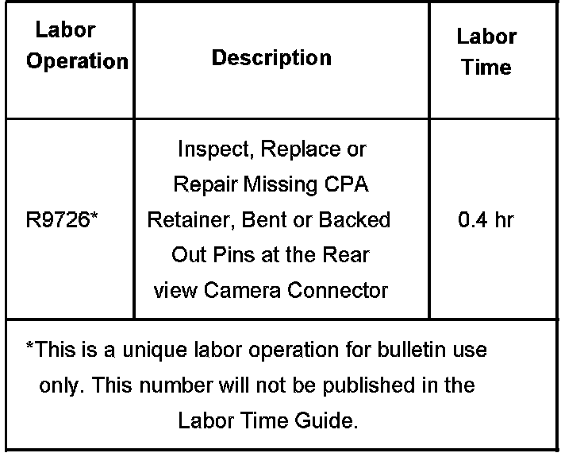

Instruments - Rear Vision Camera Inoperative
Bulletin No.: 06-08-127-002Date: November 09, 2006
TECHNICAL
Subject:
UVC Rear Vision Camera System Inoperative (Inspect for Missing CPA Retainer and/or Properly Seated Connector/Connection at Camera)
Models:
2007 Cadillac Escalade, Escalade ESV, Escalade EXT
2007 Chevrolet Avalanche, Suburban, Tahoe
2007 GMC Yukon, Yukon XL, Yukon Denali, Yukon Denali XL
with Rear View Camera (RPO UVC)
Condition
Some customers may comment on a condition with the rear vision camera having a blank screen when shifting into reverse. You will also notice a disclaimer at the top of the screen but the rest of the screen is black.
Cause
A connector position assurance (CPA) retainer may be missing from the connector at the camera connector.
Correction
Examine the connection at the rear view camera wiring harness connector. Inspect for bent / backed out pins or a missing CPA retainer in the rear view camera connector. Repair or replace as necessary. Refer to Object Detection Connector End Views, Connector 9 Rearview Camera (UVC) in SI.
Inspect for a missing CPA retainer by performing the following steps:
Refer to Safety and Security - Object Detection - Rear Camera Replacement Liftgate or Endgate in SI.
Depending on the model of the vehicle, remove one of the following components:
Endgate Trim Panel
Rear Liftgate Applique

After the trim panel or liftgate applique is removed, locate the rear vision camera wire harness connector (1).

Inspect for a missing CPA retainer (1).

If the CPA is missing from the rear view camera connector, then replace the CPA with P/N 15317832 (1).

If the CPA retainer is in place, then inspect for bent / loose terminal retention or backed out pins in the rear vision camera connector (1). Repair as necessary.
If there was No Trouble Found (NTF) with the rear view camera connector, the following diagnostic information may be useful if the vehicle exhibits the symptoms described in this bulletin.
Inspect the connections at the rear view camera module that is located under the front passengers seat.
Inspect the wiring that is right before the module. You will notice a small loop in the wiring harness. Inspect for the possibility of this loop coming in contact or snagging on the front passenger seat track when moving the seat forward or backward.
Inspect connector C209 located on the right side of the instrument panel. Inspect for an unplugged and/or a not fully connected connector.
Additional diagnostic information for RearVision Camera System may be found in Service Bulletin Number 06-08-127-001. Refer to Rear Vision Camera System Malfunction in SI.

Parts Information
Warranty Information

For vehicles repaired under warranty, use the table.

Disclaimer